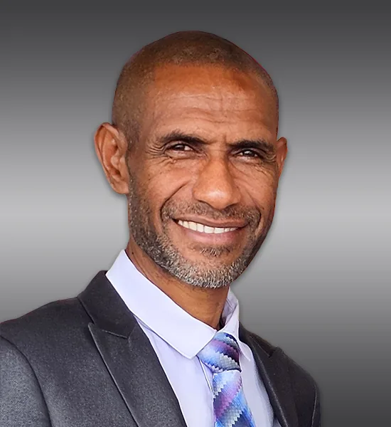

Prophet Jeremiah Rau
Founder & Overseer
As Founder and Overseer of Voice of Truth Ministry, Prophet Jeremiah Rau provides spiritual leadership and direction, guiding the ministry in its mission to align every soul to their God-given purpose. Since its beginnings in November 2015, his leadership has helped shape the ministry’s growth and community outreach.